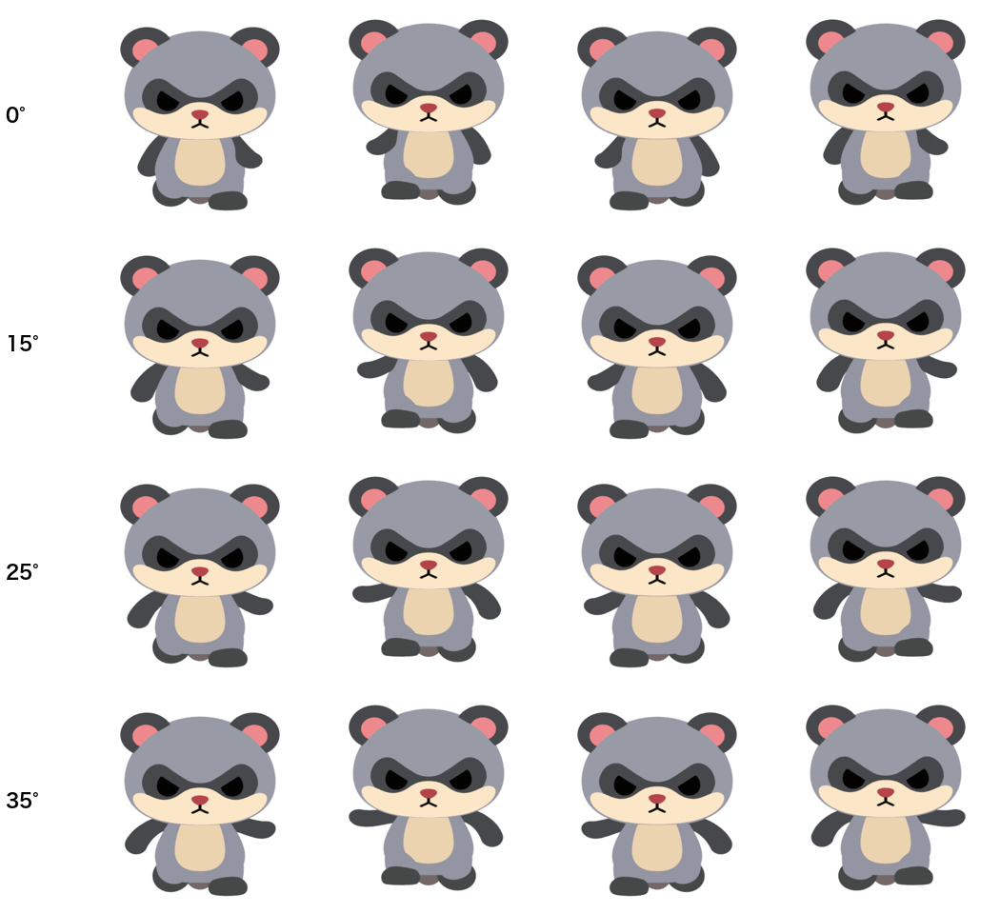
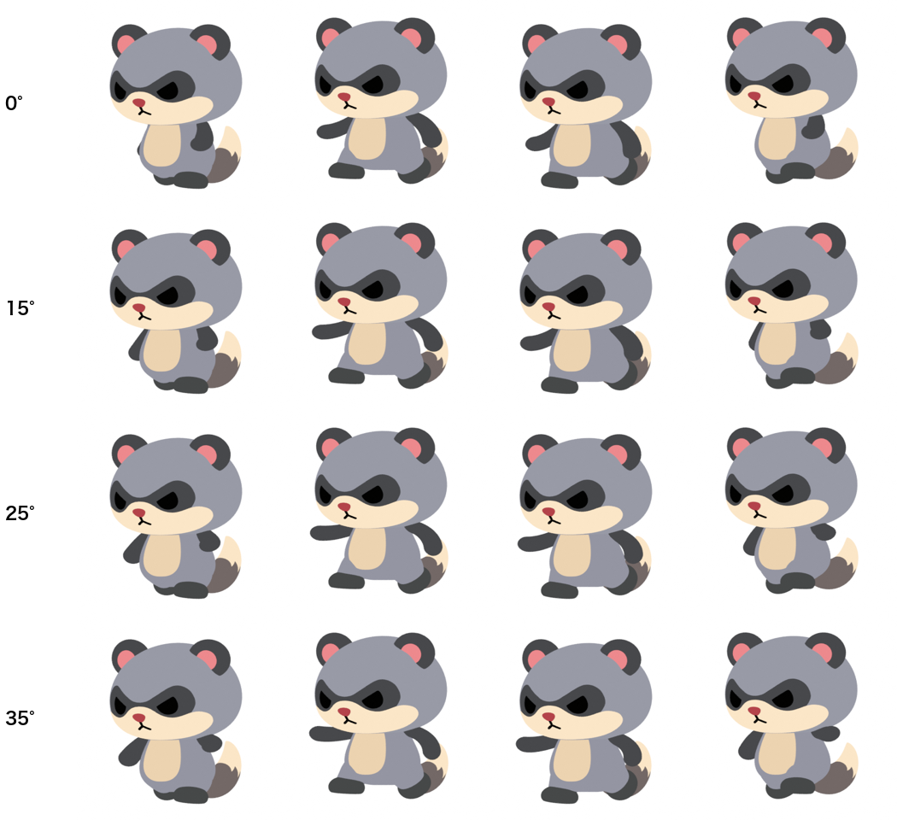
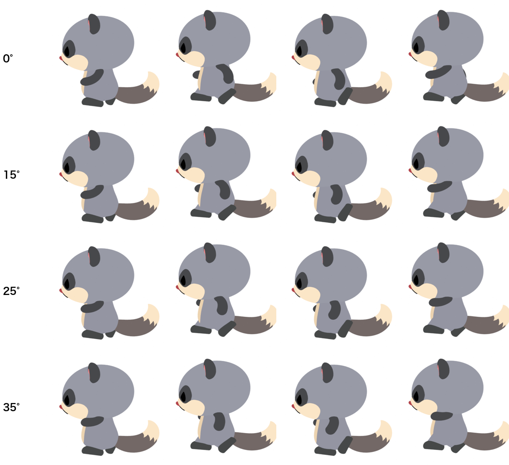
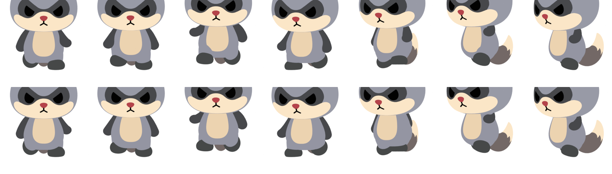
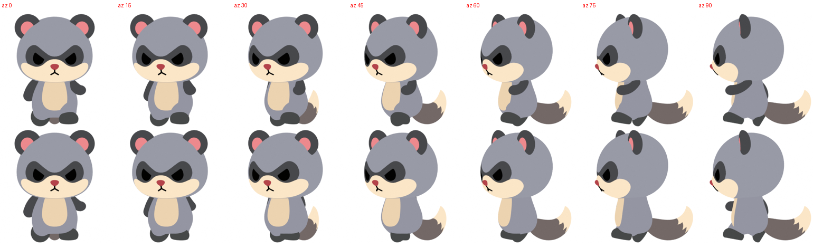

左から「今の 3D」「腕を 25° 外に広げて振る」「広げる＋お腹の 2.5D 押し出し」です。カメラは 正面 → 真横 → 正面 と回しています。
さらに遅く：
広げる角度の比較です（行：0° / 15° / 25° / 35°、列：走りの4場面）。正面・斜め 35°・真横の順に並べています。



見えたこと：
走りをループさせながら（1/2 速度）、カメラを 正面 → 真横 → 正面 と回しています。
さらに遅く（1/6 速度）：
角度は左から 0° / 0° / 5° / 17° / 25° / 35° / 43° です。今の 3D では太ももがお腹の楕円の下側を削っています。押し出し側では楕円が最後まで残り、腕の付け根は胴の後ろに回ります。

パーツごとに「重なりの段」を決めます。頭と胴（お腹を含む）が 2、腕・太もも・足が 1、しっぽが 0 です。正面付近では、段の低いパーツをカメラの視線に沿って奥へずらします。視線方向にずらすだけなので、画面上の形とポーズは 1 ピクセルも変わりません。変わるのは前後の重なり順だけです。
ずらす量は、見る角度に応じてなめらかに減らします（正面から 15° までは全量、50° 以上はゼロ）。真横や斜め 50° 以上から見た絵は、今の 3D とまったく同じです。途中の角度で急に切り替わる瞬間はありません。
モデル・リグ・動きの合わせ込みは一切変えていません。ずらしはカメラに応じた変形として、描画の直前に掛けます。
検証：50° 以上の 79 フレームは今の 3D と画素単位で完全一致しました。隣り合うフレーム間の変化量の最大は 4.33% で、今の 3D（4.34%）と同じです。角度を回しても、切り替わりのポップは起きていません。
上段が今の 3D、下段が「胴を常に手前に描く」固定の合成です。正面ではうまく見えますが、30〜45° あたりで手前の腕まで胴の裏に消えてしまいます。角度に応じて連続に変わらないため、採用しません。
